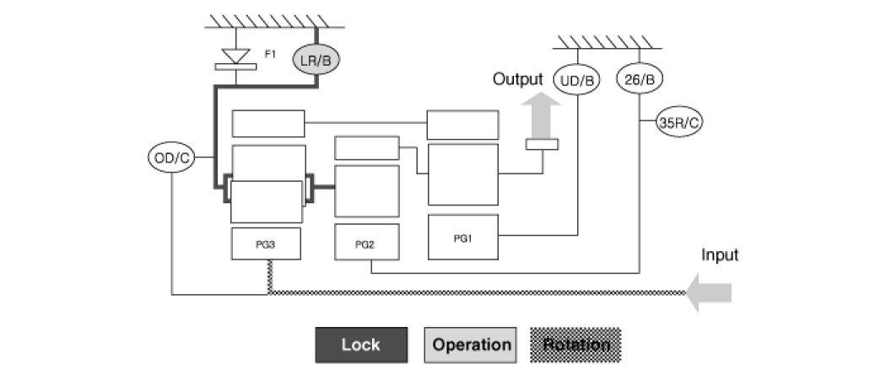
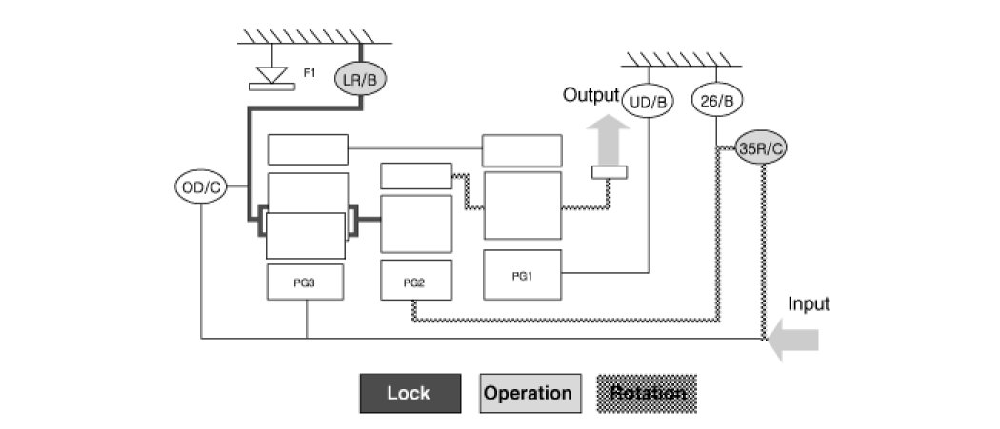
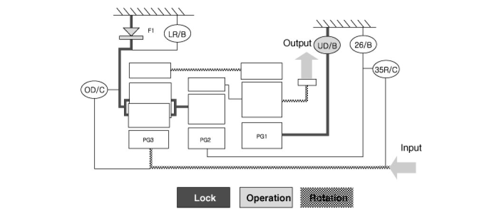
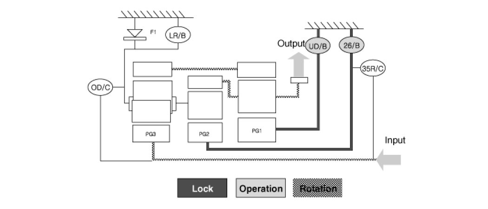
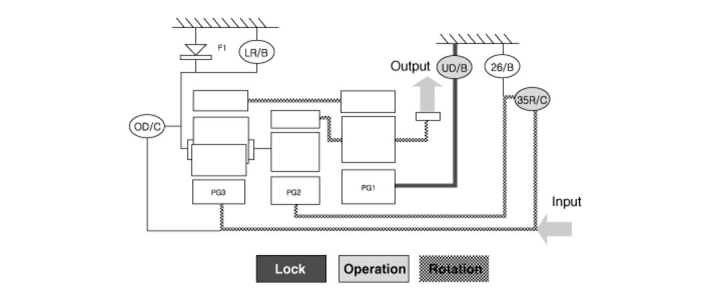
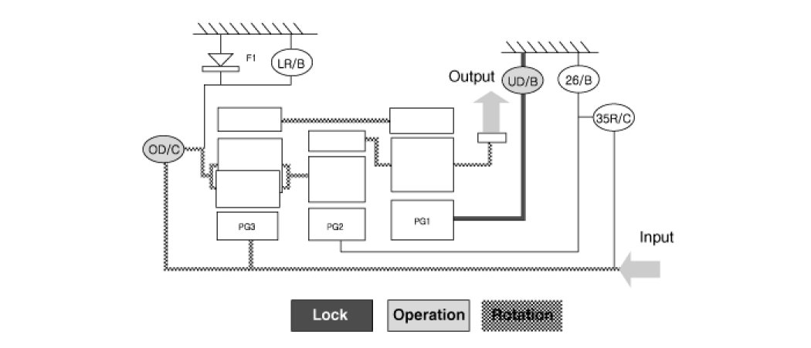
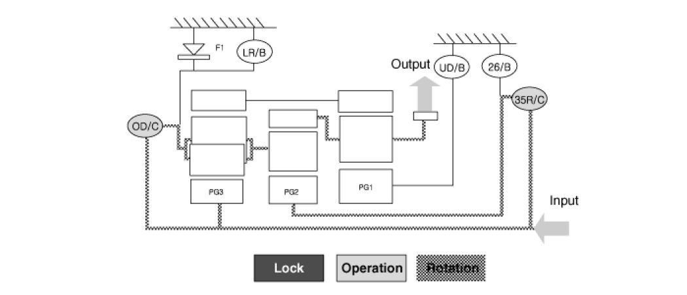
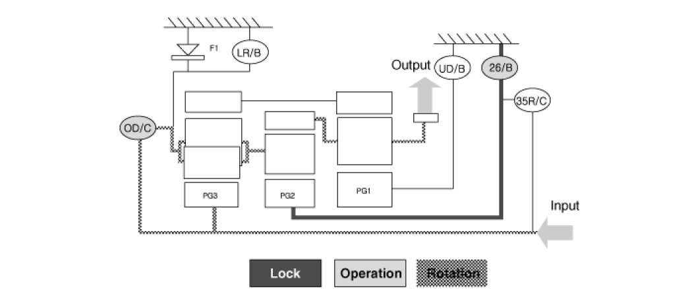

Fluid Diagrams
Power Flow Chart

> Direction of Rotation
>Lower & Reverse Brake (LR/B) Activation -> Overdrive (O/D) Hub Lock -> Mid & Rear P/C Lock
>Input Shaft Rotation -> Rear Sun Gear Rotation -> Rear Inner Pinion Rotation (Reverse) -> Rear Outer Pinion Rotation -> Rear Annulus Gear Rotation -> Front Annulus Gear Rotation -> Front Pinion Rotation -> Front Sun Gear Rotation (Reverse) -> Underdrive (U/D) Hub Rotation (Reverse)
>Input shaft rotation -> Overdrive Clutch (OD/C) Retainer Rotation
>Input shaft rotation -> 35R Clutch Rotation

> Power Delivery Route
> Middle carrier locked and middle sun gear in rotation
> Rotating the middle planetary gear's sun gear while its carrier is locked in place slows down and reverse rotates the annulus gear (front carrier), resulting in power transfer to the front carrier.
> The rear planetary gear's rear and front annulus gears rotate at a reduced rate, resulting in reverse, zero load rotation of the front planetary gear's front sun gear.

> Power Delivery Route
> Front sun gear and middle & rear carrier locked and rear sun gear in constant rotation
> When the rear sun gear is rotated, power is reduced at the rear planetary gear and then delivered to the rear and front annulus gears. The power is then reduced again at the front planetary gear, whose sun gear is locked in place, and then delivered to the front carrier.
> Here, the middle annulus gear, which comprises of a single unit with the front carrier, rotates and results in reverse, zero load rotation of the middle sun gear.

> Power Delivery Route
> Front sun gear and middle sun gear locked and rear sun gear in constant rotation
> Rotating the rear sun gear delivers power to the rear & front annulus gears, and reaction from the front carrier and the middle annulus gear, to which the sun gear is attached, transfers to the middle and rear carriers, resulting in power equilibrium and power transfer to the front carrier.

> Power Delivery Route
> Front sun gear locked and middle and rear sun gears in rotation
> Rotating the middle sun gear and the rear sun gear transfers power to the rear and front annulus gears, and reaction from the front carrier and the middle annulus gear, to which the sun gear is attached, transfers to the middle and rear carriers, resulting in power equilibrium and power transfer to the front carrier.

> Power Delivery Route
> Front sun gear locked and rear carrier and rear sun gears in rotation
> Activation of the overdrive clutch (OD/C) synchronizes the rear planetary gear's carrier and sun gears. The 1:1 rotation ratio passes through the rear and front annulus gears and reaches the front planetary gear's front carrier, to which the sun gear is attached.
> Here, the middle planetary gear's middle sun gear rotates at a faster rate in the normal direction and at zero load due to the actions of the reduced annulus gear and the carrier having a 1:1 rotation ratio.

> Power Delivery Route
> Middle and rear carriers, middle sun gear, and rear sun gear in rotation
> The middle planetary gear's middle carrier and sun gear rotate simultaneously, resulting in the 1:1 rotation ratio being transferred to the middle annulus gear (front carrier).
> Here, the rear planetary gear rotates in a 1:1 rotation ratio, as it would when the 4th gear is engaged; however, the front planetary gear remains unrestrained and the front sun gear rotates in the normal direction, at a zero load, and at a rotation ratio of 1:1.

> Power Delivery Route
> Middle carrier in rotation and middle sun gear locked
> When the middle planetary gear's sun gear is locked in place and the train's carrier's allowed to rotate, the middle annulus gear increases its rate of rotation and transfers power to the front carrier.
> Here, the rear planetary gear maintains a 1:1 rotation ratio as it would when 4th or 5th gear is engaged; however, the front planetary gear remains unrestrained and the front sun gear rotates at a faster rate in the normal direction and at zero load.